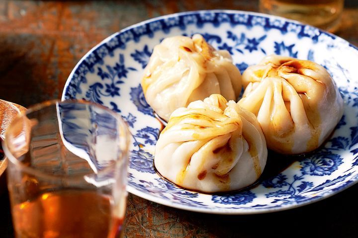

- Reserve 1/4 cup (35g) flour and place the remaining flour in a bowl.
Add 1/4 cup (60ml) boiling water and stir to combine.
Gradually add another 1/2 cup (125ml) boiling water, stirring until a dough just begins to form.
Add 1/4 cup (60ml) cold water and the oil and stir to combine.
- Transfer dough to an electric mixer fitted with a dough hook and knead for 5-6 minutes until smooth and elastic, adding the remaining flour if the dough is too sticky.
Enclose in plastic wrap and set aside to rest for 30 minutes.
- For the filling, combine all ingredients in a bowl and season well. Set aside.
- Divide the dough into 4 equal pieces and roll each piece into a log about 3cm in width. Cut the dough into pieces about the size of a golf ball.
- On a lightly floured surface, roll the balls out until 2mm thick and cut out 10cm circles.
Top a dough round with 1 tablespoon filling, and bring the edges together to form a dumpling, pinching the tops to seal.
Repeat with remaining dough and filling, keeping the filled dumplings covered with a damp tea towel while you make the rest.
- Arrange cabbage leaves in a steamer. In batches, arrange the dumplings in the steamer and steam for 8-10 minutes until cooked through.
- Combine the black vinegar and ginger in a small bowl and serve with the dumplings and sliced chilli.